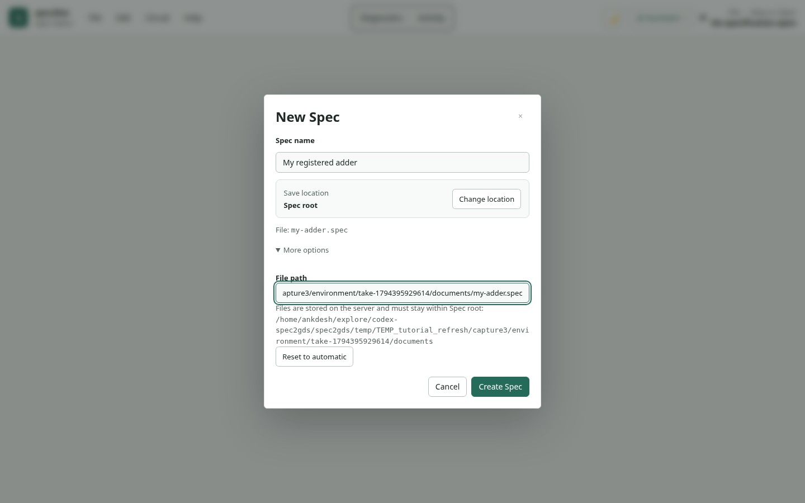
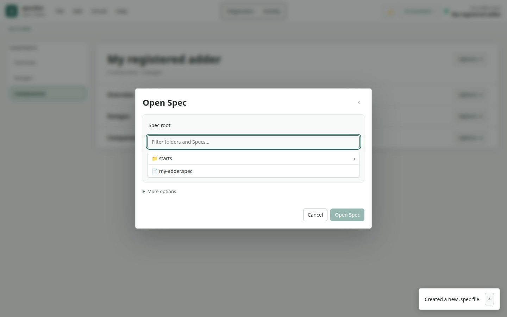

CORE 01 / 09 · GUIDED PRACTICE
Create your first Spec
Create a Spec and reopen the same saved file.
Before you start
Spec Editor and a writable folder within Spec root. No model key or compiler is required.
The prepared start is an empty reference. For this lesson, create a separate fresh my-adder.spec file.
Read each action, do it, then compare the expected result before continuing. Use a fresh prepared start to retry. Reading time and automated execution time are not measured learner practice time.
Actions
Find the document controls
Open Spec Editor at the supplied URL. Locate File, Contents, Diagnostics, Activity, and AI Assistant. On a narrow screen, open Menu for the application menus.Expected result: The editor is visible. Opening a menu does not create a Spec.
Open New Spec
Select File → New Spec.Expected result: A creation dialog asks for a Spec name and destination.
Name the Spec
Enter My registered adder as the Spec name. Inspect the suggested filename.Expected result: The readable name and suggested .spec filename are shown separately.
Choose a fresh destination
Use Change location to select your tutorial run folder within Spec root, then select Use this folder. For an exact filename, expand More options and enter a freshmy-adder.specpath.Expected result: The destination is inside your run folder and does not replace a prepared start.

New Spec sets the filename and save location from one readable name. Select the image to view its full size. Create the file
Select Create Spec. Wait for the document cover.Expected result: The cover shows My registered adder. The Components and Designs groups are empty.
Check where it was saved
Hover over the active document name to inspect its path. Record that exact path. A Spec is the logical document; its .spec file is the saved archive.Expected result: You can identify the saved file on the service host, which may differ from your browser computer.
Use Contents
Select Overview, Components, and Designs in Contents. On a small screen, open Contents first.Expected result: The document moves to the selected heading; no hardware is added.

The saved document cover and Contents panel. Select the image to view its full size. Reopen the saved file
Close this editor tab, open Spec Editor again, and select File → Open Spec. Browse to the recorded folder or use More options for the exact path.Expected result: The file picker lists the .spec file you created.

Open Spec browses saved files on the service host. Select the image to view its full size. Confirm the saved identity
Select the file and Open Spec. Compare its name, path, and empty groups. Use each draft’s Save to Spec control for later changes; File has no separate Save command.Expected result: The same empty Spec returns from disk.


Check your result
The reopened Spec has the same name and path. Its Components and Designs groups are empty.
Try it yourself
Use Edit name on the cover to change the readable name. Save and reopen it. The path stays the same.
If it fails
If New Spec reports an existing destination, choose a fresh filename. Use Open Spec to inspect an existing file. Do not delete or replace it.
Continue
NEXT GUIDEDefine a Component and its portsReference: spec editor · Complete example